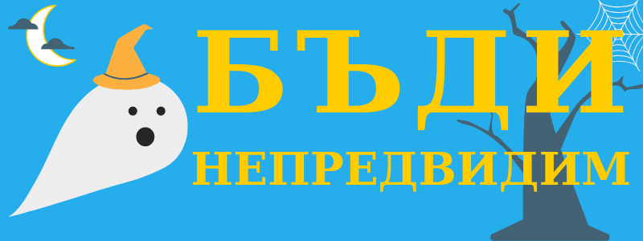

Бъди непредвидим
Децата имат неуловимо познание за магията, която се крие в света. Като порастнем го забравяме, освен ако името ни не е Мери Попинз.
В ежедневието си се държим по- скоро като автомати, водени от навици и липса на перспектива. И наистина повече от половината ни поведение се управлява от навици както ни демонстрира Чарлс Дюиг в бестселъра си „Силата на навиците“.
Смятаме, че обратното на това е да сме безотговорни или груби, но стриктната бавачка държи на маниерите и свършването на задачите, въпреки че предпочита нонсенса пред логиката, не се обяснява и съветва, че във всичко, което правим може да се намери забава. Тя вярва също, че трудностите ни правят по- добри и по- будни.
С две думи животът е пълен с противоречия, което се отразва на самите нас.
Успешните хора са непонятни
Забележителните хора, на които се възхищаваме рядко стигат до върха, ако само следват правилата. Те трябва да стъпят извън утъпкания път, да направят впечатление.
А за да се отличите и да бъдете лидери трябва и да се доверявате на инстинктите си, което значи че не винаги за околните ще е ясна вътрешната ви логика. Което неизменно означава и че ще грешите, защото повечето от клишетата за жалост са верни.
Немалко хора смятат, че знаменитостите знаят нещо повече от тях по отношение на диети, дизайн или взаимоотношения, а всъщност те са постигнали забележителни постижения в своята област, което им позволява да наемат знанията и труда на други по- малко бляскави, но вещи в областта си хора.
Най- успешните членове на обществото са тези, които разпознават качеството, таланта и неписаните правила и усещат кога могат да ги използват, заобиколят или да ги огънат в своя полза.
Знайте границите си
А за да постигнат това трябва да тестват границите. Ако сме израстнали в здравословна среда като деца ни се предоставя възможност да изследваме интересите си, както и отношенията с близките и бездушевния свят. Но дали поради липса на време, поради страх или поради незнание, понякога възрастните прекъсват преждевременно полета ни, което спира растежа ни в дадена област без причина. Така се приучаваме да разчитаме на механизми за справяне, които не са в наш интерес.
Затова по- късно ни се налага да се научим отново на хаотично веселие, което може да включва както безобидни хитринки, така и лудории, на които не се гледа с добро око, но пък ни облекчават и ни карат да се чувстваме отново живи и ентусиазирани.
Енергията прави разликата
За да направите впечатление не е задължително да сте по- добри от другите, а да излъчвате въодушевление. За да считат, че може да вършите дадена работа вече отговаряте на минималните изисквания, това се подразбира. Това важи в повечето случай и за проекти, които сами си поставяте, защото тогава имате визията; дори и за момента да ви липсват някои от уменията с отдаденост или пари може да си набавите необходимото.
Е, щом веднъж имате компетентност, как да излезете напред в надпреварата? Ами, трябва да бъдете и по- важно да не се боите да покажете, че сте различни. Но защо повечето пъти това не действа? Хората отсреща са свикнали да правят нещата по техния си начин, който не изисква много- много усилия. Затова за да ни отпуснат малко свобода да подобрим статуквото е нужно не само да намираме и да посочваме неефективните процеси, но и да предлагаме решения, които да не са объркващи или трудоемки.
Това значи да сте не просто резултатни и различни, а направо освежаващи.
Как да го постигнем?
Най- напред като не се оставяме да бъдем заслепени от повърхностни и бляскави жестове, а да се разровим за по- дълбоки и фундаментални елементи.
Каквото и да правим, трябва да не свикваме прекалено с процеса, а периодично да се връщаме към основите, тоест да си припомняме причините, поради което правим нещата и точно как, както и да подлагаме допусканията и предположенията си под въпрос.
Трябва също да надминаваме очакванията, но това не значи да търсим да изтъкваме постиженията си, а да вършим всичко незабележимо и без усилие. Отсъствието ни да се усеща.
Това изисква доста креативност, тъй като всяка ситуация е различна, всеки проект има уникални трудности.
Наистина малко са напълно оригиналните идеи, но ако имаме достатъчно богато възприятие чрез рекомбинирне, размишление и опростяване може да достигнем до някои не съвсем очевидни бисери.
Това е стратегията на Остин Клеон- да не копираме, а да крадем като артист, тоест от много източници и само елементите, които ни харесват, а не цялото.
Така въображението ни се обогатява и виждаме много повече възможности навсякъде наоколо.
На кръстопът с много възможности
А колкото повече възможности виждате и не се страхувате да сграбчите, толкова по- малко сте на милостта на шефа, половинката или семейството.
Ако сте предвидими, може да си помислят, че може да ви използват или да ви навредят без да се защитите. Примерно да ви натоварят с още папки или задачи за обработка, защото знаят, че най- големия ви страх е да не ви уволнят.
Ако криете богатства в себе си, ако сте уверени, че може да започнете наново независимо какво ви сполети, излъчването ви и отношението ви към света се променя.
Така имате възможност да сте щедри, да правите неща дори да не ви изнася, за да защитите ценностите си, или може да се подадете на импулсите си, за да внесете малко хаос в живота си, който може да ви извади от коловоза на сивотата.
Според думите на Харуки Мураками “Aко четеш книгата, която всички четат, ще мислиш само това, което всички мислят.” През XX век медиите наистина бяха масови- само с няколко телевизионни канала, вестника или книги, които минават през цензурата. С популяризирането на интернет, наистина има общност, блог или видео за всеки интерес, но пак има определни, които се показват на всички благодарение на мощни алгоритми.
В днешно време постоянно получаваме реклами или препоръки какви новини и романи да четем, какви сериали да следим, какви филми да гледаме или какви продукти да си купим, които са избрани от системите на Google, Facebook и други нечестиви сили. ;)
Затова се отдалечете от екрана и постоянното наблюдение.
Как?
Всеки ден правете нещо, което не е избрано от алгоритъма!
Вместо да скролвате в Instagram, търсете информация по някоя тема, която ви е интересна: нови находки в Египет, история на киберпънка или кой е най- старият зеленчук на света, тоест каквото ви хрумне.
Отидете в антикварна книжарница и грабнете заглавие, което не ви е познато!
Питайте за посоката вместо да използвате смартфона!
Естествено носете маска и пазете дистанция.
И по- общо търсете повече вместо да цъкате на това, което ви се изпречи пред носа!
Вижте още: